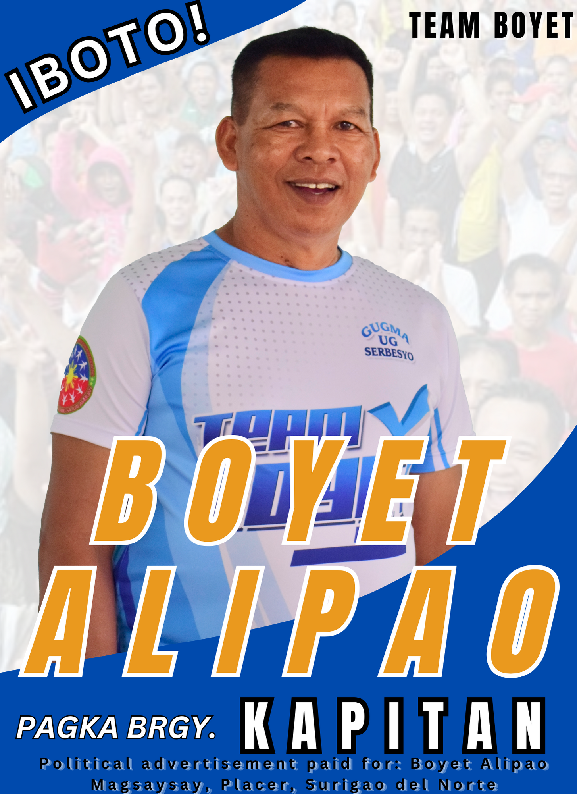

News and Updates
Newly Elected Punong Barangay HON.EDWIN S. ALIPAO
EDWIN S. ALIPAO won the position as Punong Barangay againts LIZA TURTUR for the BSKE2023. For almost 4,200 voters in Brgy.Magsaysay He got 1,876 votes from his supportes. This will be his third and last term as Punong Barangay.
Newly Elected Barangay Kagawad HON.ALLAN VILLAZON

ALLAN VILLAZON got the first spot as newly elected Barangay Kagawad of Brgy.Magsaysay,he got 2,042 votes over 4,200 registered voters in the said barangay.
Re-Elected Barangay Kagawad HON.MARICHU S. BARCOS
MARICHU BARCOS was the second elected Barangay Kagawad last BSKE2023, she got 1,691 votes and this will be her third and last term as Barangay Kagawad in barangay Magsaysay.
Re-Elected Barangay Kagawad HON. MAGGIE S. CALONIA
MAGGIE CALONIA was the third elected Barangay Kagawad last BSKE2023, she got 1,664 votes over 4,200 registered voters.She is now a second termer Barangay Kagawad in barangay Magsaysay.
Re-Elected Barangay Kagawad HON.MAEANN DE LUNA

MAE ANN DE LUNA is the fourth elected Barangay Kagawad last October 30 BSKE2023,she got 1,514 votes over 4,200 registered voters.This will be her first term as elected Barangay Kagawad because last term she is just a substitute on his Husband Hon.Jun De Luna.
Newly Elected Barangay Kagawad HON.BRYAN SALUBRE

BRYAN SALUBRE was the fifth newly elected Barangay Kagawad of Brgy.Magsaysay last BSKE2023,he got 1,453 votes over 4,200 registered voters.He was a former Sangguniang Kabataan Chairperson for almost 5 years in the year 2018 until 2023.
Newly Elected Barangay Kagawad HON.FRANCO MOLETA
FRANCO MOLETA JR. is the sixth newly elected Barangay Kagawad last BSKE2023,he got 1,425 votes for almost 4,200 registered voters in barangay Magsaysay.He was a President in his purok for almost ten years.
Newly Elected Barangay Kagawad HON.ROLLY ESPINA

ROLLY ESPINA is the seventh newly elected Barangay Kagawad last BSKE2023,he got 1,340 votes over 4,200 voters in barangay Magsaysay.